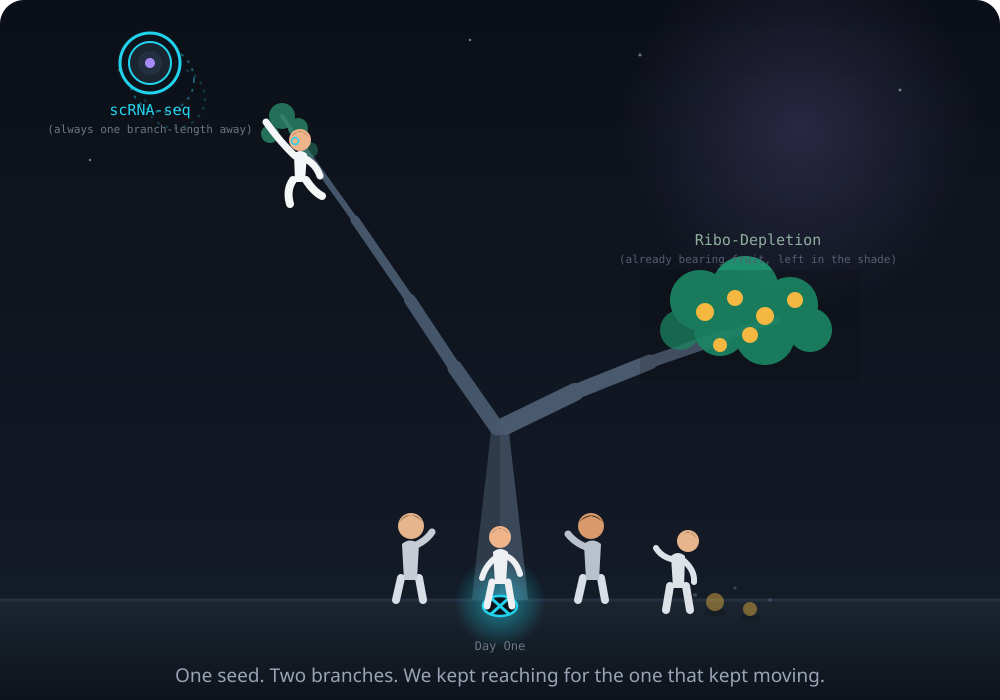

Why I Said Yes
Ask me today whether joining that startup was the right call, and the honest answer is an easy yes. It turned into one of the most enjoyable, energizing stretches of my career, and I want to lead with that plainly, because everything that follows — including the parts I'd do differently — sits on top of that fact, not against it.
At Thermo Fisher, CRISPR guide design had matured into something reliable and well understood, and I was proud of the work I'd done there. But I noticed a pull growing in me toward a different kind of problem: what it would actually feel like to build a research function from its very first day, in a room small enough that a good idea could turn into a shipped product in months rather than years. That pull wasn't about escaping anything. It was about wanting more of something I'd only gotten small tastes of — building from zero, fast, on a problem I already loved.
So when a small biotech building CRISPR-based tools for library prep came looking for someone who already knew the biology, I said yes quickly, and I'd say yes again just as fast. I didn't yet know what it actually feels like to build a function inside a company that doesn't have one. I only knew that finding out sounded like exactly the kind of hard, interesting problem I wanted next, and I was right.
Walking In Without a Map
Here's the thing nobody tells you about joining a startup to do the thing you're already good at: being good at the science buys you almost nothing on day one, and that turned out to be one of the more thrilling surprises of the job rather than a discouraging one. I knew CRISPR biology cold — six or seven years of it, PAM sites and off-target scoring and repair pathways living in my head without effort. What I didn't know yet was how a fifteen-person company decides what to fund, how a term sheet shapes a roadmap, or why a research idea I thought was obviously worth pursuing might need to wait its turn because it didn't map to anything the company was being measured on that quarter. A few of my early pitches didn't land the way I expected, and instead of feeling discouraging, chasing down why turned into some of the fastest, most useful learning of my career.
What accelerated that learning more than anything else were two people who decided early on that teaching me the rest of it was worth their time.
Keith, Jon, and Being Taken Seriously Before I'd Earned It
Keith Brown, the founder, and Jon Armstrong, the VP of R&D, were the kind of people you meet a handful of times in a career — deeply knowledgeable, obviously passionate, and, crucially, generous with both in a way that didn't have to be. They didn't just tell me what the company's vision was. They walked me through why it was the vision, which is a different and much rarer thing. I remember sitting in Jon's office in my first few weeks, watching him get genuinely animated about a sequencing-depth argument I'd assumed I'd have to make to him, not with him. He already had it half-built in his head. He just wanted to see if I'd get there the same way.
That mattered more than I understood at the time. Being taken seriously by people who didn't yet have proof that you deserved it does something to how you show up afterward. I stopped hedging my ideas in meetings quite so much. I started trusting that if something was wrong with my thinking, Jon or Keith would actually tell me, rather than letting me quietly embarrass myself in front of someone else. That kind of early trust is not something you can manufacture with a mentorship program. It's just two people deciding you're worth their attention before the spreadsheet says so, and it set the tone for how I tried to treat people once I was the one doing the hiring.
What Nils Homer's Code Taught Me Without Him Knowing It
My actual first assignment was less inspiring than any of that: port over code and documentation from Fulcrum Genomics, a contract bioinformatics shop we'd been leaning on before I joined. Fulcrum's founder and CEO, Nils Homer, is one of the more quietly respected names in bioinformatics — the kind of person whose tools you've probably used without knowing whose hands built them. I never worked with him directly. I worked with what he'd left behind, which turned out to be its own kind of education.
Reading someone else's production bioinformatics code, written by someone that good, is not like reading a textbook. Textbooks show you the idea. His codebase showed me the shape of the actual problem underneath the idea — where the edge cases lived, which assumptions were load-bearing, which parts of a "simple" sequence-analysis script actually needed to be defensive and which didn't. I didn't have a single conversation with him about it. I just spent weeks in his logic, and came out the other side writing differently. That's a strange kind of mentorship — one-directional, silent, and still one of the most useful things that happened to me that year. It's also the point where I stopped thinking of "porting old code" as a chore and started treating it as the fastest tour available of how someone better than me actually thinks.
The Technology Underneath Everything Else in This Story
Everything that follows only makes sense if you understand the one idea the whole company was built on, so it's worth pausing here before the story gets more complicated. CRISPRclean™ uses CRISPR/Cas enzymes not to edit a genome, but to selectively cut specific double-stranded cDNA molecules during library preparation — the step before a sample ever reaches a sequencer. A DNA fragment that gets cut loses the adapters it needs to be amplified during PCR. No adapters, no amplification. No amplification, it never gets sequenced. The molecule isn't removed by filtering it out of the data afterward, the way most people assume depletion works. It's removed before it ever becomes data, by a pair of molecular scissors that only cut what you tell them to.
It's a genuinely elegant mechanism, and the first time I watched it work cleanly on a plate — the depleted sample's sequencing yield redirected almost entirely toward the transcripts that actually mattered, instead of drowning in the ones that didn't — I understood immediately why Keith and Jon had built a company around it. The idea is simple enough to explain in a paragraph. Making it work reliably, at the scale a commercial product demands, is a completely different problem, and that difference is where the next four years of my life actually happened.
From a Handful of Guides to Thousands
Editing a genome in vivo, the thing most people picture when they hear "CRISPR," typically needs three or four good guide RNAs — you're targeting one gene, maybe a handful of sites near it, and that's the whole design problem. CRISPRclean inverts that completely. You're not editing a gene. You're depleting a defined population of unwanted molecules out of a sequencing library, and that population isn't three or four sequences — it's thousands of distinct targets, each needing its own guide. The gap between those two numbers is not just "more of the same work." At three or four guides, a person can eyeball the off-target report and use their judgment. At a thousand, judgment doesn't scale — you need a pipeline that makes the same judgment call correctly, unattended, every single time, across targets you've never manually inspected.
That last part is easy to state and hard to earn. "Leaves everything else untouched" is not a claim you get to make because your guides look clean on paper. You have to run the depleted and non-depleted libraries side by side, compare per-gene representation across the whole transcriptome, and be willing to find out you were wrong. More than once, I was. A guide panel that looked perfect in silico would come back from a real sequencing run with a subtler footprint on the biology than I'd predicted, and I'd have to go back and ask what my model of "off-target" had missed. I want to be honest that this was some of the most satisfying work of my career — not despite the repeated correction, but because of it. Being wrong quickly, in a place where the data would tell you so, is a much better way to learn a system than being right slowly.
Building People, Not Just Pipelines
None of that scales without a team, and building one from nothing turned out to be a completely different skill than anything my own technical training had prepared me for. I got lucky early — one of my first hires turned out to be exactly the kind of person you build a team around: reliable in a way that let me stop double-checking her work almost immediately, and thorough in the specific way that meant problems surfaced early instead of at the worst possible moment. She became my right hand within a few months, and a meaningful part of whatever the bioinformatics group became was downstream of that one good call.
I also learned, sometimes the harder way, what real startup readiness looks like in an interview versus on paper. A couple of hires straight out of school were sharp and well-trained and simply weren't ready yet for the specific ambiguity of a startup — the absence of a senior person three desks over who already knows the answer, the expectation that you'll figure out the right question before anyone hands it to you. That's not a knock on them. It's a mismatch I got better at spotting the more of it I saw, and it taught me as much about what to look for as any of my good calls did.
What I took from both the good calls and the bad ones was a rule I now apply automatically: think medium-term. Long-term hiring — betting on where someone will be in five years — is a fiction in a startup, because you can't see five years out yourself, so pretending you can evaluate someone against that horizon is just guessing with extra steps. Short-term hiring is its own trap, because someone who isn't looking past the next few months isn't actually invested in the mess that a real build requires. The habitable middle is someone who's committed for the next year or two of hard, ambiguous work and genuinely wants to be there for it. And the honest math on hiring in a startup is that you will not get every call right. If you get roughly eight in ten right, you are on the path to having a team that survives contact with reality. That's the bar. Not perfection — durability.
Being the Director and Still Being the Person Who Writes the Code
I carried the title Director of R&D, Bioinformatics, and I also spent a very large share of my actual working hours writing pipelines myself, which is not a contradiction, whatever the org chart implies. There's a version of "being a manager" that means stepping back from the work entirely, and I think that version is a mistake at a company this size, at this stage. If you can't sit down and build the thing yourself — trace the actual logic, hit the actual edge cases, feel where the pipeline gets awkward at 2 a.m. before a deadline — you lose the ability to teach someone else to build it well, and you lose your own credibility the first time a design decision gets questioned by someone who was in the weeds and you weren't.
There was also a less romantic reason to stay hands-on: I was the company's principal investigator on the non-dilutive funding that kept a meaningful part of this work alive — grants and contracts from BARDA, NIH/NHGRI, HaDEA, and the CDC that ultimately added up to more than $25 million. Writing a competitive renewal, or a technical report to a European consortium, requires you to actually understand what happened in the lab that quarter at a level of detail no status update from a direct report fully substitutes for. Being an individual contributor wasn't a nostalgic choice. It was, some weeks, the only way I could honestly sign my name to what I was reporting.
What I'd Do Differently Next Time
No honest account of building something from zero is complete without the parts I'd change, and I've come to see those parts less as regrets and more as the clearest, most useful lessons the whole experience gave me. Looking back, most of them trace to the same root cause: we spent a disproportionate share of our energy reaching for the branch that wouldn't stop moving, while the branch already heavy with fruit sat within arm's reach the entire time.
The clearest version of this was single-cell RNA-seq depletion. On paper, it should have been one of our more straightforward products — deplete the abundant, uninformative transcripts that a tool like Cell Ranger or Seurat never actually uses to call cell type, and let researchers recover real signal at a fraction of the sequencing depth. In practice, we set the bar for ourselves higher than we needed to, and it kept rising without us noticing. Customers ran wildly different tissue types and cell populations, each with its own profile of what counted as "safe to remove." And the classification tools themselves kept evolving underneath us — 10x Genomics iterated on Cell Ranger's own methods while we were mid-validation, which meant the goalposts for "does this actually help downstream analysis" shifted more than once during a single development cycle. We were chasing something that had its own good reasons to keep moving, and the lesson I'd carry forward is to name that dynamic early and plan around it, rather than treating it as a fixed target we'd simply missed.
Meanwhile, the product that was already working — ribosomal RNA depletion, the simplest and most universal version of the same underlying chemistry — was quietly outperforming everything comparable on the market, in a workflow every genomics lab already ran. In hindsight, I'd push much harder, much earlier, to put the full weight of the company's marketing and sales effort behind it. It went on to become Jumpcode's highest revenue product by a wide margin, which is a great outcome and also a lesson worth banking: the flashiest application of a platform technology is often not where its commercial value ends up landing. Sometimes it's the boring, universal version of the same idea, sold into every lab already running the most common assay in the field, and it deserves at least as much energy as the harder, more exciting-sounding problem sitting next to it.
The last piece builds on the first two. Looking back, I'd invest earlier in making our own product easier to adopt, not just more powerful. We put a lot of design energy into optimizing the expensive steps of a workflow and could have put more into making the instructions simple enough that a bench scientist could pick the product up and trust it on the first try. A customer deciding whether to adopt a new reagent isn't only evaluating whether the chemistry works — they're weighing whether it makes their week easier or harder, and a workflow with too many finicky steps loses that argument even when the underlying science is genuinely better. We understood this in the abstract the whole time; building for it consistently is the discipline I'd bring with me next time.
If there's a single image I keep coming back to for all three of these, it's the one at the top of this post: one seed, splitting into two branches. One branch keeps drifting just out of reach, and it's easy to convince yourself that closing that gap is the whole job. The other branch is already bearing fruit, right there, and it's remarkably easy to let it sit exactly because it isn't asking for anything. That's the single clearest lesson I took from four years of building this from scratch: learn to notice which branch is already paying rent, and give it the attention it's earned.
Who Actually Belongs at a Startup
I'd take the whole bet again without hesitation, mistakes included, because the good days outnumbered the hard ones by a wide margin, and I mean that plainly rather than as a consolation prize. What I'd look for now, in someone deciding whether to make the same jump, is a short list, and I don't think you can talk yourself into any of it if it isn't already true:
Willing to take a real career risk. Not a resume line that reads well in hindsight — an actual bet, made before you know how the story ends, with a real chance it doesn't pay off.
Fast on their feet. Able to learn a new area and pivot without being told to, because nobody at a fifteen-person company has the bandwidth to walk you through a decision twice.
Genuinely believes research can move faster than it currently does. Not as a slogan, but as something they'll act on when the easier, slower option is sitting right there.
Finds the whole thing intellectually fun, not just admirable. If working hard and smart on a genuinely hard problem doesn't excite you on its own terms, a startup will grind that difference down until it's the only thing you notice.
I don't think I'd have written any of this the same way if I were still inside it. Some of the clearest lessons here only came into focus with a few months of distance — which is its own small lesson, I suppose: you don't always get to see the shape of the tree while you're still standing in its shade.